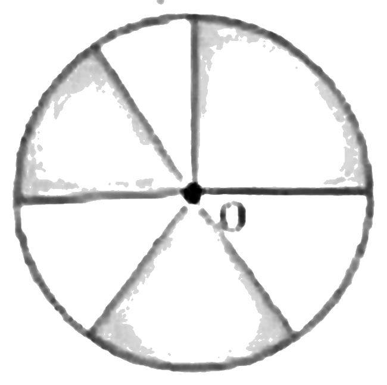
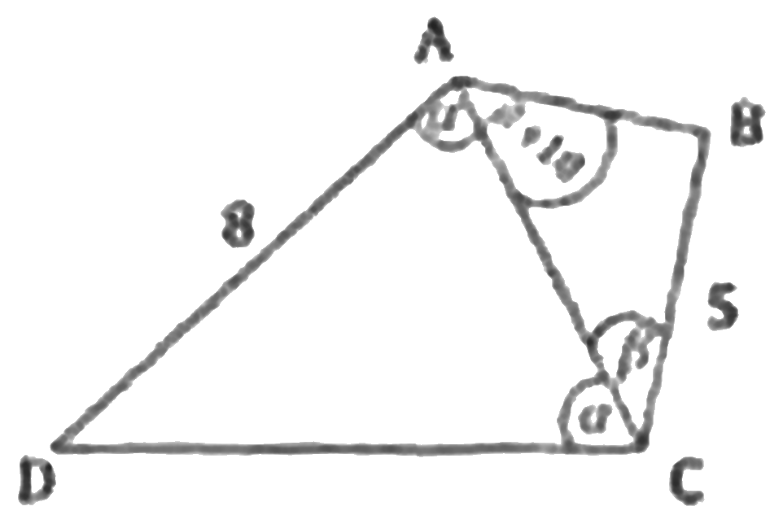

A, B ו־C הן שלוש ספרות עוקבות כך ש־A < B < C. נתון:
ABC + CBA ------ EEE0
(הערה: ספרת האחדות בתוצאה היא אפס (0) ולא האות O.)
מה מהבאים נכון בהכרח?
מכונת מילוי בלוני גז ממלאת בלון גז של 5 ליטרים ברבע שעה. יום אחד, בעקבות חור בבלון הגז, ארך המילוי במכונה חצי שעה.
בתוך כמה דקות יתרוקן בלון גז מלא של 15 ליטרים אם יש בו חור הקטן פי 2 מהחור שהיה בבלון הקטן?
בכד תרוזים כחולים ואדומים. 25% מהתרוזים האדומים מהווים 10% מכלל התרוזים בכד.
מה היחס בין מספר התרוזים הכחולים למספר התרוזים האדומים בכד?
גליל שאורך רדיוס הבסיס שלו הוא 3 וגובהו 3 יכול להכיל 54 ק"ג קמח. כמה ק"ג קמח יכול להכיל, לכל היותר, חרוט שרדיוס הבסיס שלו הוא 2 וגובהו זהה לגובה הגליל?
בשק 21 כדורים – 7 כחולים, 7 אדומים ו־7 ירוקים. החל מהשעה 12:00, אחת ל־20 דקות ניגשת דפנה לשק, מוציאה כדור אחד ורושמת את צבעו בטרם היא מחזירה אותו לשק. החל מהשעה 12:01 ניגש גם יונתן, אחת ל־25 דקות, ומוציא כדור אחד רושם את צבעו ומחזיר אותו לשק.
מה הסיכוי שעד השעה 14:00 גם דפנה וגם יונתן הוציאו את אותו הצבע, ורק אותו?

בסרטוט שלפניכם מעגל שמרכזו O ורדיוסו r ובו גזרה בעלת זווית של 72°, גזרה בעלת זווית של 60° וגזרה בעלת זווית ישרה.
מה גודלו של השטח הלבן?
a ו־b מספרים שלמים. נתון: b < a
מה מהבאים נכון בהכרח?

נתון: α > 60° , β < 50°.
בהסתמך על נתונים אלו ועל נתוני הסרטוט, מה מבין האפשרויות הבאות יכול להיות אורכה של צלע AC?
עמית יצאה לרכיבה על אופניה במסלול מעגלי שרדיוסו r. שעה לאחר שיצאה, בעת שעברה שליש מהדרך, יצא איתי, במהירות גבוהה משל עמית, בעקבותיה על אופניו. שניהם נפגשו לראשונה בנקודת היציאה שלהם לאחר שאיתי הקיף את המעגל כולו פעמיים.
מהירותה של עמיתמהירותו של איתי = ?
6 מכונות דפוס, העובדות בקצב זהה וקבוע, מדפיסות 8 ספרים ב־12 ימי עבודה של 10 שעות. בעל בית הדפוס רכש עוד 12 מכונות דפוס הזהות לקיימות ושינה את שעות העבודה במהלך השבוע.
כמה ימי עבודה ידרשו לכל מכונות הדפוס יחדיו להדפיס 6 ספרים אם כעת יש ביום עבודה רק 8 שעות?